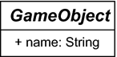

5.12 Abstrakte Klassen und abstrakte Methoden
Nicht immer soll eine Klasse sofort ausprogrammiert werden, zum Beispiel dann nicht, wenn die Oberklasse lediglich Methoden für die Unterklassen vorgeben möchte, aber nicht weiß, wie sie diese implementieren soll. In Java gibt es dazu zwei Konzepte: abstrakte Klassen und Schnittstellen (engl. interfaces).
5.12.1 Abstrakte Klassen
Bisher haben wir Vererbung eingesetzt, und jede Klasse konnte Objekte bilden. Das Bilden von Exemplaren ist allerdings nicht immer sinnvoll, zum Beispiel soll es untersagt werden, wenn eine Klasse nur als Oberklasse in einer Vererbungshierarchie existieren soll. Sie kann dann als Modellierungsklasse eine Ist-eine-Art-von-Beziehung ausdrücken und Signaturen für die Unterklassen vorgeben. Eine Oberklasse besitzt dabei Vorgaben für die Unterklasse. Das heißt, alle Unterklassen erben die Methoden. Ein Exemplar der Oberklasse selbst muss nicht existieren.
Um dies in Java auszudrücken, setzen wir den Modifizierer abstract an die Typdeklaration der Oberklasse. Von dieser Klasse können dann keine Exemplare gebildet werden, und der Versuch einer Objekterzeugung führt zu einem Compilerfehler. Ansonsten verhalten sich die abstrakten Klassen wie normale, enthalten die gleichen Eigenschaften und können auch selbst von anderen Klassen erben. Abstrakte Klassen sind das Gegenteil von konkreten Klassen.
Wir wollen die Klasse GameObject als Oberklasse für die Spielgegenstände abstrakt machen, da Exemplare davon nicht existieren müssen:
Listing 5.87: com/tutego/insel/game/vh/GameObject.java, GameObject
public abstract class GameObject
{
public String name;
}
Mit dieser abstrakten Klasse GameObject drücken wir aus, dass es eine allgemeine Klasse ist, zu der keine konkreten Objekte existieren. Es gibt in der realen Welt schließlich keine allgemeinen und unspezifizierten Spielgegenstände, sondern nur spezielle Unterarten, zum Beispiel Spieler, Schlüssel, Räume und so weiter. Es ergibt also keinen Sinn, ein Exemplar der Klasse GameObject zu bilden. Die Klasse soll nur in der Hierarchie auftauchen, um alle Spielobjekte zum Typ GameObject zu machen und ihnen einige Eigenschaften zu geben. Dies zeigt, dass Oberklassen allgemeiner gehalten sind und Unterklassen weiter spezialisieren.
Abbildung 5.28: In der UML werden die Namen abstrakter Klassen kursiv gesetzt.
| Tipp |
|
Abstrakte Klassen lassen sich auch nutzen, um zu verhindern, dass ein Exemplar der Klasse gebildet werden kann. Der Modifizierer abstract sollte aber dazu nicht eingesetzt werden. Besser ist es, die Sichtbarkeit des Konstruktors auf private oder protected zu setzen. |
Basistyp abstrakte Klasse
Die abstrakten Klassen werden normalerweise in der Vererbung eingesetzt. Eine Klasse kann die abstrakte Klasse erweitern und dabei auch selbst wieder abstrakt sein. Auch gilt die Ist-eine-Art-von-Beziehung weiterhin, sodass sich schließlich Folgendes schreiben lässt:
Listing 5.88: com/tutego/insel/game/vh/Declarations.java, main()
GameObject go1 = new Room();
GameObject go2 = new Player();
GameObject[] gos = { new Player(), new Room() };
| Hinweis |
|
Die Deklaration GameObject[] gos = { new Player(), new Room() } ist die Kurzform für GameObject[] gos = new GameObject[]{ new Player(), new Room() }. Wenn im Programmcode new GameObject[]{...} steht, kennzeichnet das nur den Typ des Feldes. Das ist unabhängig davon, ob die Klasse GameObject abstrakt ist oder nicht. |
5.12.2 Abstrakte Methoden
Der Modifizierer abstract vor dem Schlüsselwort class leitet die Deklaration einer abstrakten Klasse ein. Eine Klasse kann ebenso abstrakt sein wie eine Methode. Eine abstrakte Methode gibt lediglich die Signatur vor, und eine Unterklasse implementiert irgendwann diese Methode. Die Klasse ist somit für den Kopf der Methode zuständig, während die Implementierung an anderer Stelle erfolgt. Abstrakte Methoden drücken aus, dass die Oberklasse keine Ahnung von der Implementierung hat und dass sich die Unterklassen darum kümmern müssen.
Da eine abstrakte Klasse abstrakte Methoden enthalten kann, aber nicht enthalten muss, unterscheiden wir:
- Reine (pure) abstrakte Klassen: Die abstrakte Klasse enthält ausschließlich abstrakte Methoden.
- Partiell abstrakte Klassen: Die Klasse ist abstrakt, enthält aber auch konkrete Implementierungen, also nicht abstrakte Methoden. Das bietet den Unterklassen ein Gerüst, das sie nutzen können.
| Definition |
|
Hat eine pure abstrakte Klasse nur eine Methode, so sprechen wir von einer SAM (für Single Abstract Method). |
Mit Spielobjekten muss sich spielen lassen
Damit wir mit den Spielobjekten wie Tür, Schlüssel, Raum und Spieler wirklich spielen können, sollen die Objekte aufeinander angewendet werden können. Das Ziel unseres Programms ist es, Sätze abzubilden, die aus Subjekt, Verb und Objekt bestehen:
- Schlüssel öffnet Tür.
- Spieler nimmt Bier.
- Pinsel kitzelt Spieler.
- Radio spielt Musik.
Die Programmversion soll etwas einfacher sein und statt unterschiedlicher Aktionen (öffnen, nehmen, ...) nur »nutzen« kennen.
Zur Umsetzung dieser Aufgabe bekommen die Spielklassen wie Schlüssel, Spieler, Pinsel, Radio eine spezielle Methode, die ein anderes Spielobjekt nimmt und testet, ob sie aufeinander angewendet werden können. Ein Schlüssel öffnet eine Tür, aber »öffnet« keine Musik. Demnach kann ein Musik-Objekt nicht auf einem Tür-Objekt angewendet werden, wohl aber ein Schlüssel-Objekt. Ist die Anwendung möglich, kann die Methode weitere Aktionen ausführen, etwa Zustände setzen. Denn wenn der Schlüssel auf der Tür gültig ist, ist die Tür danach offen. Ob eine Operation möglich war oder nicht, soll eine Rückgabe aussagen.
Eine Methode in GameObject könnte somit folgende Signatur besitzen:
boolean useOn( GameObject object )
Die Operation useOn() soll auf dem eigenen Objekt das an die Methode übergebene Objekt nutzen. Implementiert die Schlüssel-Klasse useOn(), so kann sie testen, ob das GameObject eine Tür ist, und außerdem kann sie prüfen, ob Schlüssel und Tür zusammenpassen. Wenn ja, kann der Schlüssel die Tür öffnen, und die Rückgabe ist true, sonst false.
Da jede Spielobjekt-Klasse die Operation useOn() implementieren muss, soll die Basisklasse sie abstrakt deklarieren, denn eine abstrakte Methode fordert von den Unterklassen eine Implementierung ein, sonst ließen sich keine Exemplare bilden:
Listing 5.89: com/tutego/insel/game/vi/GameObject.java, GameObject
public abstract class GameObject
{
public String name;
public abstract boolean useOn( GameObject object );
}
Die Klasse GameObject deklariert eine abstrakte Methode, und da sie immer ohne Implementierung ist, steht statt des Methodenrumpfs ein Semikolon. Ist mindestens eine Methode abstrakt, so ist es automatisch die ganze Klasse. Deshalb müssen wir das Schlüsselwort abstract ausdrücklich vor den Klassennamen schreiben. Vergessen wir das Schlüsselwort abstract bei einer solchen Klasse, erhalten wir einen Compilerfehler. Eine Klasse mit einer abstrakten Methode muss abstrakt sein, da sonst irgendjemand ein Exemplar konstruieren und genau diese Methode aufrufen könnte. Versuchen wir, ein Exemplar einer abstrakten Klasse zu erzeugen, so bekommen wir ebenfalls einen Compilerfehler. Natürlich kann eine abstrakte Klasse nicht-abstrakte Eigenschaften haben, so wie es GameObject mit dem Attribut name zeigt. Konkrete Methoden sind auch erlaubt, die brauchen wir jedoch hier nicht. Eine toString()-Methode wäre vielleicht noch interessant, sie könnte dann auf name zurückgreifen.
Vererben von abstrakten Methoden
Wenn wir von einer Klasse abstrakte Methoden erben, so haben wir zwei Möglichkeiten:
- Wir überschreiben alle abstrakten Methoden und implementieren sie. Dann muss die Unterklasse nicht mehr abstrakt sein (wobei sie es auch weiterhin sein kann). Von der Unterklasse kann es ganz normale Exemplare geben.
- Wir überschreiben die abstrakte Methode nicht, sodass sie normal vererbt wird. Das bedeutet: Eine abstrakte Methode bleibt in unserer Klasse, und die Klasse muss wiederum abstrakt sein.
Die Unterklasse Door soll die abstrakte Methode useOn() überschreiben, aber immer false zurückgeben, da sich eine Tür in unserem Szenario auf nichts anwenden lässt. Nach dem Implementieren der abstrakten Methode sind Exemplare von Türen möglich:
Listing 5.90: com/tutego/insel/game/vi/Door.java, Door
public class Door extends GameObject
{
int id;
boolean isOpen;
@Override public boolean useOn( GameObject object )
{
return false;
}
}
Eine Tür hat für den Schlüssel eine ID, denn nicht jeder Schlüssel passt auf jedes Schloss. Weiterhin hat die Tür einen Zustand: Sie kann offen oder geschlossen sein.
Die dritte Klasse Key speichert ebenfalls eine ID und implementiert useOn():
Listing 5.91: com/tutego/insel/game/vi/Key.java, Key
public class Key extends GameObject
{
int id;
public @Override boolean useOn( GameObject object )
{
if ( object instanceof Door )
if ( id == ((Door) object).id )
return ((Door) object).isOpen = true;
return false;
}
}
Die Realisierung ist etwas komplexer. Als Erstes prüft die Methode mit instanceof, ob der Schlüssel auf eine Tür angewendet wird. Wenn ja, muss die ID von Schlüssel und Tür stimmen. Ist auch dieser Vergleich wahr, kann isOpen wahr werden, und die Methode liefert true.
Im Testprogramm wollen wir zwei Schlüssel auf eine Tür anwenden. Nur der Schlüssel mit der passenden ID öffnet die Tür. Eine Tür kann nicht auf einen Schlüssel angewendet werden, denn die Implementierungen sind nicht symmetrisch ausgelegt:
Listing 5.92: com/tutego/insel/game/vi/Playground.java, main()
Door door = new Door();
door.id = 12;
Key key1 = new Key();
key1.id = 99;
Key key2 = new Key();
key2.id = 12;
System.out.printf( "erfolgreich=%b%n", key1.useOn(door) );
System.out.printf( "erfolgreich=%b, isOpen=%b%n", key2.useOn(door), door.isOpen );
System.out.printf( "erfolgreich=%b%n", door.useOn(key1) );
Die Ausgaben sind:
erfolgreich=false
erfolgreich=true, isOpen=true
erfolgreich=false

Implementiert eine Klasse nicht alle geerbten abstrakten Methoden, so muss die Klasse
selbst wieder abstrakt sein. Ist unsere Unterklasse einer abstrakten Basisklasse nicht
abstrakt, so bietet Eclipse mit  +
+  an, entweder die eigene Klasse abstrakt zu machen oder alle geerbten abstrakten Methoden
mit einem Dummy-Rumpf zu implementieren.
an, entweder die eigene Klasse abstrakt zu machen oder alle geerbten abstrakten Methoden
mit einem Dummy-Rumpf zu implementieren.
Ihr Kommentar
Wie hat Ihnen das <openbook> gefallen? Wir freuen uns immer über Ihre freundlichen und kritischen Rückmeldungen.
 Jetzt bestellen
Jetzt bestellen


{kind=link}